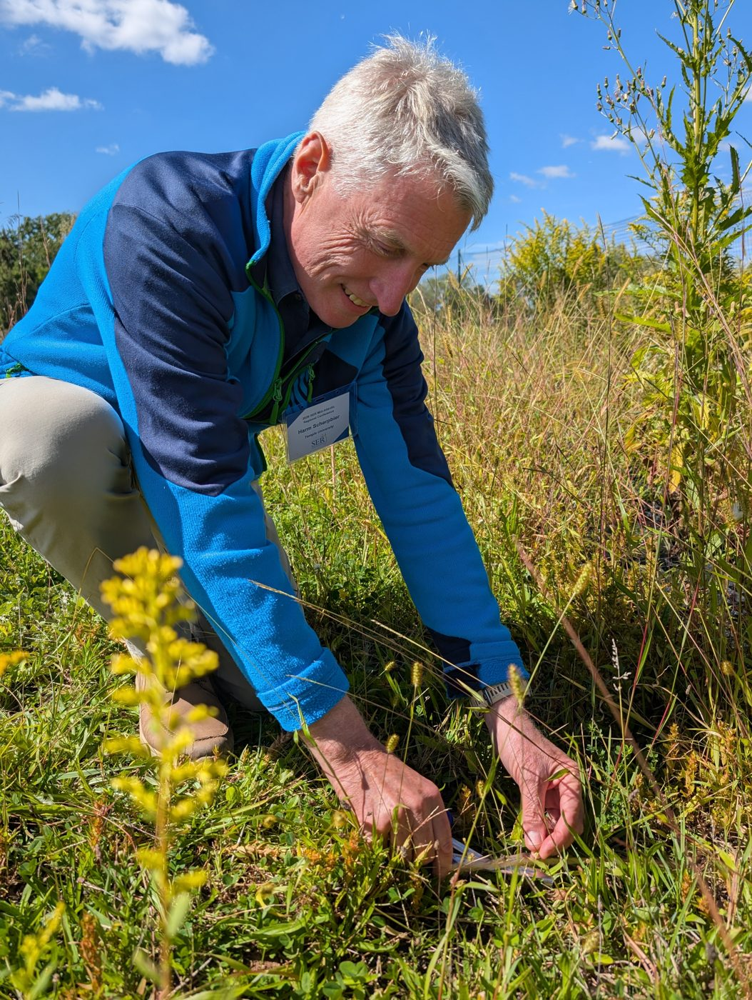
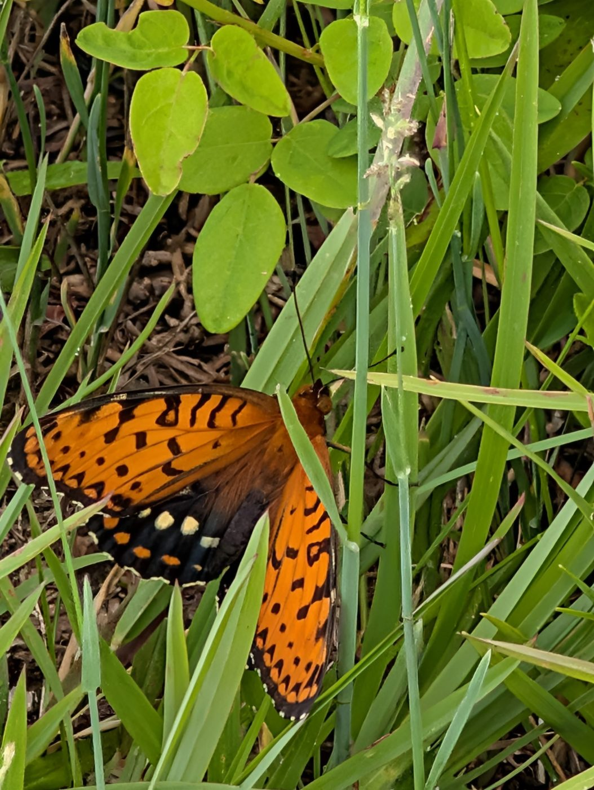

Landscape restoration & rewilding
Restoring the plant layer of the landscape
Harm Scherpbier · PhD Student, Temple University, Department of Biology · Sewall Conservation Ecology Lab

Research interests
Bringing the right plants back, and keeping them
My research focuses on large landscape restoration and rewilding, and in particular on the plant layer: the essential base that invertebrates and vertebrates depend on, each with their own specific requirements.
How do we bring the essential mix of plant species back into the landscape, and how do we maintain that diversity over the long term? My work includes germination and propagation, and designing the right mix of flora for a restoration site.
Current project
The Eastern Regal Fritillary
The Eastern Regal Fritillary (Speyeria idalia) is a rare butterfly now found in the East only at the Fort Indiantown Gap National Guard Training Center in Pennsylvania.
My project works toward reintroducing it to new areas, giving the butterfly a stronger chance of long-term survival, and creating additional large eastern prairie and meadow that supports this and many other butterflies.

Before ecology
A career in health information technology
Before turning to ecology I worked in health information technology, and I wrote Unvendor: Innovate Healthcare with a Diverse IT Stack.
At the Jefferson College of Population Health I teach Population Health Analytics and Health AI, and I bring 15 years of graduate-level teaching experience to my work.